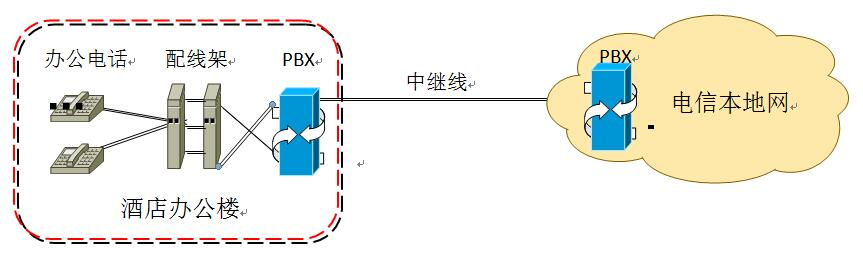

电话系统方案
一、功能
1)作用之一---------各办公室共享外线
一台电话交换机可以使一、二条外线就分配给十几或几十个员工或部门使用。为贵公司每一名员工安排一部分机，外线打入首先听到“您好!欢迎至电ⅹⅹ酒店，请拨分机号，人工服务请拨0”的一段计算机语音进行信息处理（也可以实现人工转接），这样即能节约费用，又节约人工的同时，对于外线打入者也会以最快的速度与要联系的人联系。实现同时共享，（如：以太网交换机是共享，多台计算机共享带宽，就好比一条高速公司，每辆车行行驶各的道一样），许多用户以为安装了电话交换机都误认为一、二条外线就能使每个电话交换机的分机同时拨打外线，其实这是一个错误的认识，只有在您的外线无人用时或外线比较多、有空隙的外线时，其它分机才能拨出外线，内部之间无限制。
2)作用之二----------管理功能
电话交换机可以限制，一些部门允许打长途，一些部门允许打市话，有些部门只允许打内部电话，还可以管理监控各办公室的详细话费清单。
3)作用之三----------内部通话免费
分机内部免费通话，无需支付电话费、无月租费、无承诺话费
4)作用之四----------可以相互转接
外线电话打进来可通过分机转接，而不用使员工跑来跑去接电话或来回找人接电话。
5)程控电话交换机其他功能
强插外线或内线
账号漫游
通话限时
日夜间模式自动切换
呼入等待
无应答转移
外线号码连成一个号码（对外只公布一个号）
电话分机无应答转移、无人接听转外线（如：外线号码或手机）
电话分机遇忙转分机或外线（如：外线号码或手机）
电话分机立即转分机或外线（如：外线号码或手机）
中继转中继（外线转外线功能）
热线号码
电话会议
长途电话IP字头加发（不用加拨号器）
二、组网方案
1、贵酒店办公电话接入公网方式，
安装使用者小程控交换机，将所有办公电话连接到小程控交换机上，实现内部电话的交换，同时实现内部通话免费，内部小程控交换机通过中继线与公网连接。

三、 性能特点
- 节省通话费：群内之间通话不收费，群内与群外之间通话才收费。
- 编号方案灵活：群内号码可自主选择。
- 业务综合性：具有公网市话业务功能。
- 用户扩容方便：可无限制扩容。
- 性能稳定、可靠：设备维护管理水平高，设备运转更加稳定、可靠。
- 便于新功能的引入和网络升级:方便引入先进技术、提供新业务、新功能，网络随着电信公网设备的软硬件升级而同步升级